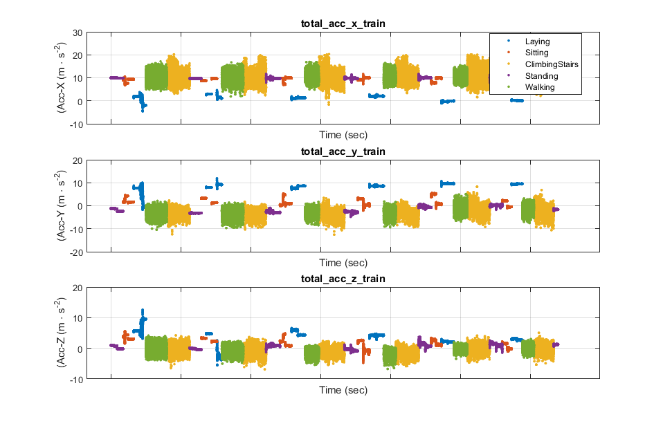
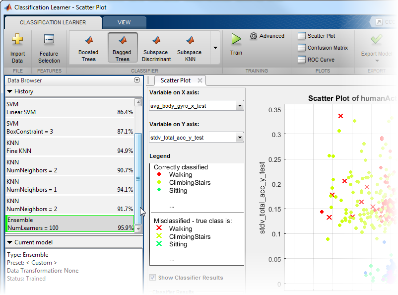
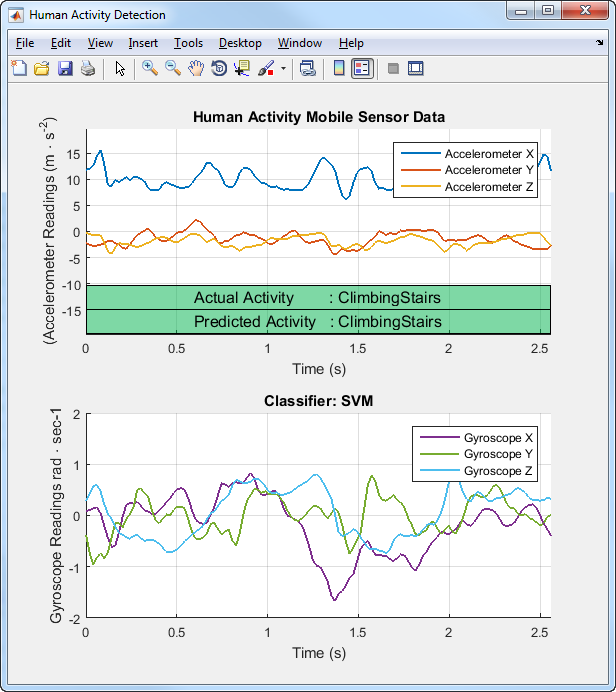

Human Activity Learning Using Mobile Phone Data
Human activity sensor data contains observations derived from sensor measurements taken from smartphones worn by people while doing different activities (walking, lying, sitting etc). The goal of this example is to provide a strategy to build a classifier that can automatically identify the activity type given the sensor measurements.
Copyright (c) 2015, MathWorks, Inc.
Contents
- Description of the Data
- Download data from source
- Load data frome individual files and save as MAT file for reuse
- Load Training Data
- Display data summary
- Create Table variable
- Pre-process Training Data: Feature Extraction
- Train a model and assess its performance using Classification Learner
- Additional Feature Extraction
- Use the new features to train a model and assess its performance
- Load Test Data
- Visualize classifier performance on test data
Description of the Data
The dataset consists of accelerometer and gyroscope data captured at 50Hz. The raw sensor data contain fixed-width sliding windows of 2.56 sec (128 readings/window). The activities performed by the subject include: 'Walking', 'ClimbingStairs', 'Sitting', 'Standing',and 'Laying'
How to get the data: Execute downloadSensorData and follow the instructions to download the and extract the data from the source webpage. After the files have been extracted run saveSensorDataAsMATFiles. This will create two MAT files: rawSensorData_train and rawSensorData_test with the raw sensor data
- total_acc_(x/y/z)_train : Raw accelerometer sensor data
- body_gyro_(x/y/z)_train : Raw gyroscope sensor data
- trainActivity : Training data labels
- testActivity : Test data labels
Reference:
Davide Anguita, Alessandro Ghio, Luca Oneto, Xavier Parra and Jorge L. Reyes-Ortiz. Human Activity Recognition on Smartphones using a Multiclass Hardware-Friendly Support Vector Machine. International Workshop of Ambient Assisted Living (IWAAL 2012). Vitoria-Gasteiz, Spain. Dec 2012
Download data from source
If you are running this script for the first time, make sure that you execute these functions.
- downloadSensorData : This function will download the dataset and extract its contents to a folder called: UCI HAR Dataset This folder must be present before you execute saveSensorDataAsMATFiles
if ~exist('UCI HAR Dataset','file') downloadSensorData; end
Load data frome individual files and save as MAT file for reuse
- saveSensorDataAsMATFiles : This function will load the data from the individual source files and save the data in a single MAT file for easy accesss
if ~exist('rawSensorData_train.mat','file') && ~exist('rawSensorData_test.mat','file') saveSensorDataAsMATFiles; end
Load Training Data
load rawSensorData_train
Display data summary
plotRawSensorData(total_acc_x_train, total_acc_y_train, ...
total_acc_z_train,trainActivity,1000)
 Create Table variable
rawSensorDataTrain = table(... total_acc_x_train, total_acc_y_train, total_acc_z_train, ... body_gyro_x_train, body_gyro_y_train, body_gyro_z_train);
Pre-process Training Data: Feature Extraction
Lets start with a simple preprocessing technique. Since the raw sensor data contain fixed-width sliding windows of 2.56sec (128 readings/window) lets start with a simple average feature for every 128 points
humanActivityData = varfun(@Wmean,rawSensorDataTrain); humanActivityData.activity = trainActivity;
Train a model and assess its performance using Classification Learner
classificationLearner
Additional Feature Extraction
T_mean = varfun(@Wmean, rawSensorDataTrain); T_stdv = varfun(@Wstd,rawSensorDataTrain); T_pca = varfun(@Wpca1,rawSensorDataTrain); humanActivityData = [T_mean, T_stdv, T_pca]; humanActivityData.activity = trainActivity;
Use the new features to train a model and assess its performance
classificationLearner

Load Test Data
load rawSensorData_test
Visualize classifier performance on test data
Step 1: Create a table
rawSensorDataTest = table(... total_acc_x_test, total_acc_y_test, total_acc_z_test, ... body_gyro_x_test, body_gyro_y_test, body_gyro_z_test); % Step 2: Extract features from raw sensor data T_mean = varfun(@Wmean, rawSensorDataTest); T_stdv = varfun(@Wstd,rawSensorDataTest); T_pca = varfun(@Wpca1,rawSensorDataTest); humanActivityData = [T_mean, T_stdv, T_pca]; humanActivityData.activity = testActivity; % Step 3: Use trained model to predict activity on new sensor data % Make sure that you've exported 'trainedClassifier' from % ClassificationLearner plotActivityResults(trainedClassifier,rawSensorDataTest,humanActivityData,0.1)
